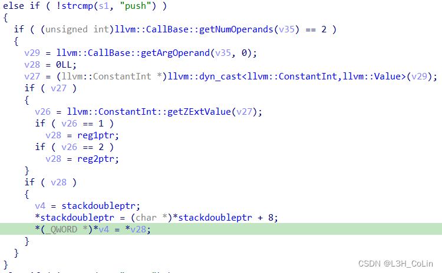

这篇文章中我们来分析一下红帽杯2021-simpleVM这道题，由于和上一道题相比这道题相对更加简单些，读者可以在阅读本文之前实操一下，遇到困难时再通过本文找到答案，这样能够更好地提升我们的做题实践能力。（本题的附件可以在Github上找到，在笔者的Github中也有保存）
RedHat2021-simpleVM
首先还是使用IDA打开，找到了几个没有名字的函数：
Step 1: 找到runOnFunction函数
如果读者还记得上一篇文章的方法，这一步应该来说不难想到。我们是通过IDA汇编界面中对函数的交叉引用情况进行判断的，如果这个函数没有数据段的交叉引用，那么它一定不是runOnFunction函数，因为这是一个覆写的函数，其地址会被保存到vtable结构体中。根据这种方法，我们可以找到多个函数：
1 | LOAD:0000000000006780 sub_6780 proc near ; CODE XREF: sub_67D0+24↓p |
其中我们打开前两个函数，发现都是一些删除和调用析构函数的操作，因此这一定不是runOnFunction函数的覆写。故runOnFunction应该是sub_6830函数。
1 | __int64 __fastcall runOnFunction(__int64 a1, llvm::Value *a2) |
Step 2: 分析runOnFunction函数
上面的代码就是反汇编出来的runOnFunction函数，和上一篇文章国赛题眼花缭乱的代码段相比，还是友好了不少的，代码的逻辑清晰可见。
首先使用了getName函数获取了Value对象的名字，这里其遍历的是函数名，笔者分享一种看代码的方法：从后往前，执果索因。我们可以看到最后三行是如果v4不等于0就执行sub_6AC0函数，否则就返回。在runOnFunction函数中我们没有发现任何有关于内存空间改动的函数，只有一个strlen和memcmp函数用于进行内存操作，但这两个函数都并不会对内存中对应地址的值产生任何变化。因此漏洞点一定不在runOnFunction函数，需要执行到sub_6A70函数。那也就意味着v4不能等于0。前面的代码中，唯一能让v4可能不等于0的语句就是v4=v8==0。注意这条语句的意思是如果v8==0那么v4=1。看一下汇编代码就可以知道：
这里使用了一个setz指令，它的含义是当标志寄存器中的ZF位为1时，将al的值设为1。因此，我们需要让v8==0才行。不难发现，v8==0的条件就是函数名等于"o0o0o0o0"。因此这个LLVM pass只会对名为"o0o0o0o0"的函数进行一些操作。我们再来到sub_6A70函数看一下执行了什么操作。
Step 3: 分析sub_6AC0函数
下面就是sub_6AC0函数的内容：
1 | unsigned __int64 __fastcall sub_6AC0(__int64 a1, llvm::Function *a2) |
这里的llvm::Function::begin和llvm::Function::end都是Function类的迭代器对象，其迭代的对象是函数中的基本块。因此这个循环的意思就是对每一个基本块执行sub_6B80函数。其中v3 = (llvm::BasicBlock *)llvm::ilist_iterator<llvm::ilist_detail::node_options<llvm::BasicBlock,false,false,void>,false,false>::operator*(v5);这条语句中的ilist是LLVM标准库中定义的一个数据结构，与C++标准模板库list类似，但是LLVM中都是使用ilist来存储一个函数的所有基本块或指令，可以将其看成一个列表，针对于LLVM做了一些特殊的优化。那么v3也就是函数中的每一个基本块。我们需要进入sub_6B80函数看一下对这些基本块又进行了什么操作。
Step 4: 分析sub_6B80函数
这个函数是主要操作，比较长，我们一点点来看。
Segment 1
这一段中可以看到，使用了一个大循环，是对基本块进行遍历。这里的v36变量是从v39变量dyn_cast过来的，这是一个llvm定义的类型转换，不用去管。这里是将v36转换成了Instruction指令对象，然后获取了这个指令的指令码getOpcode(v36)。这个指令码的定义笔者找资料找了好久都没有找到，最终查看源码才发现其定义保存在llvm/IR/Instruction.def文件中，上面的代码意思是指令码需要为55才能进入下一步操作，否则就会直接跳过这个指令去处理下一条指令。我们看一下llvm/IR/Instruction.def文件中哪个指令的指令码是55：
1 | HANDLE_OTHER_INST(55, Call, CallInst) |
即Call指令的指令码为55。如果查看上一篇文章中生成的.ll文件就可以发现，函数调用就是用Call指令来表示的。也即o0o0o0o0函数中的所有代码都要是函数调用，其他的代码写了也不会处理。
由此我们可以猜测出v35变量的CallBase指针类型实际上也就是函数调用的对象。源码中的注释说，CallBase对象是所有可以调用的指令的基类，这里“可以调用的指令”包含InvokeInst和CallInst。所有调用的指令都含有：调用的函数自身、零或若干个参数、零或若干个操作数组以及零或若干个操作数输入 （原文是operand bundle，笔者不确定这里指的是不是数组的意思，如有错误还请读者指正）
下面的getCalledFunction就是获取函数本身，将函数名拷贝到了变量s1中，下面判断函数名是否是pop，如果是判断getNumOperands()函数的结果是不是2。这里需要注意的是，getNumOperands()函数并不是返回函数参数的个数，而是返回一条指令中的变量个数。注意这里的v35变量类型是CallBase，是指令Instructions的子类，与CalledFunction变量的类型完全不同。随便截取一段.ll文件的代码可以看到call后面会跟上变量名，变量名之前加上@符号说明llvm将其认为是一个变量。因此在这里其实际返回的值应该是函数参数的个数+1。
Segmant 2
之后我们进入分析当函数名为pop时进行了何种处理。后面的一些变量笔者重命名了一下，读者可以自己打开IDA对照一下。
pop函数的参数个数应该是1。之后进入内部调用了getArgOperand函数，这个函数是用来返回被调用的函数的第一个实参的值，然后v31变量赋值为这个值，并以ConstantInt即整型常量的类型保存。如果这个值不为0，那么再次进行转换，getZExtValue这个函数我们在上一篇文章中见过类似的函数，通过函数名猜测其功能：get Zero Extended Value，即无符号扩展整数。其为1或2时v32变量指向两段内存的地址，这两段内存分别被命名为reg1和reg2。后面又将v3变量赋值为某段内存的二重指针（因为stackdoubleptr变量保存的是一个指针指向内存空间，因此这里表示其为二重指针）。那一段内存空间被命名为stack。hmmm，这样看起来程序中有一个小的vm，有虚拟出来的寄存器和栈，算是和vm题很像了。而且这里的操作也和汇编的pop指令完全相同，将栈顶的值赋值给reg1或reg2，然后栈指针下移8。因此这个vm中栈底在低地址，而栈顶在高地址，与汇编中的栈排列相反。
现在我们知道了这里可能是一个vm，那么分析后面的条件判断就会快上很多了。
Segment 3

下面一个条件判断判断函数名是否是push，想都不用想这一定是入栈操作，将两个寄存器中的一个的值压入栈中，然后栈指针上移。
Segment 4
当函数名为store时，注意最后的4行代码，出现了指针操作。其将一个寄存器看成指针，将这个地址保存的值拷贝到另外一个地址，这个地址就是另外一个寄存器指定的地址的地址（二重指针）。很明显这里我们可以将任意地址保存到这两个寄存器中。
Segment 5
当函数名为load时，操作与store类似，但要注意拷贝的方向。store和load函数一定会是我们pwn的重点，至于具体应该如何去pwn，待下面进行调试时再去探索。
Segment 6
add函数加法操作，有两个参数。第一个参数指定寄存器，第二个参数是要加到这个寄存器上的数值。这个函数对于我们的pwn也是有很大意义的。可以构造任意地址。
Segment 7
min函数减法操作，有2个参数，第一个参数指定寄存器，第二个参数是要减去的数值。
至此，源码已经全部分析完毕。我们已经可以在exp中编写6个函数的原型了，注意参数的类型和个数。
1 | void o0o0o0o0(); |
Step 5: 编写exp.c，同时进行调试
现在，我们来着手编写exp，重点需要调试load和store这两个函数的执行。
一开始，reg1、reg2、stack中所有的值都为0，由于本题中opt-8程序没有开启PIE保护，因此其加载基址固定不变，我们可以利用这个获取到其got表中的地址，将其拷贝到reg或stack中。然后在此基础上计算出one_gadget的地址，将其写回到got表，即可执行one_gadget，逻辑很简单。
在这里，我们选择free函数作为地址覆盖的对象，找到opt程序中free函数got表的位置为0x77E100。因此o0o0o0o0函数的第一条语句应该是：add(1, 0x77E100);。然后使用load函数将got表中地址值保存到另一个寄存器中：load(1);。现在我们想要的地址在reg2中，加上相应的one_gadget偏移。与上一题相同，这里使用的是笔者虚拟机的libc而不是题目给的libc：
1 | root@ubuntu:~/Desktop/LLVM/challenges/RedHat2021-simpleVM# one_gadget /lib/x86_64-linux-gnu/libc.so.6 |
找到free函数偏移：
1 | root@ubuntu:~/Desktop/LLVM/challenges/RedHat2021-simpleVM# python3 |
因此，第三条语句应该是add(2, 0x4942e);，这样就得到了第一个one_gadget的地址。第四条语句将其写回到free.got中：store(1);，完成，我们连stack都没有用到。
exp：
1 | void o0o0o0o0(); |
尝试运行，发现3个one_gadget都不行，应该是one_gadget的条件不满足。因此考虑写入system函数的地址，然后创建一个名为sh的函数，看看能不能执行到system(“sh”)。system函数的libc偏移为0x52290。
exp：
1 | void o0o0o0o0(); |
可惜，还是不行。使用原来的libc应该是可以跑one_gadget的，因为有两个one_gadget的条件是栈中某处为0，相对来说更容易满足一些。笔者尝试通过追踪函数调用链获取到VMPass.so的加载基址，但发现VMPass.so的runOnFunction函数是通过call寄存器的方式调用的，目前尚无思路。不过这道题本身还是不难理解的，能够做到修改one_gadget就已经足够了。
下一篇文章笔者将会分析今年（2022）国赛题的satool，看一下和去年的同名题有什么区别。